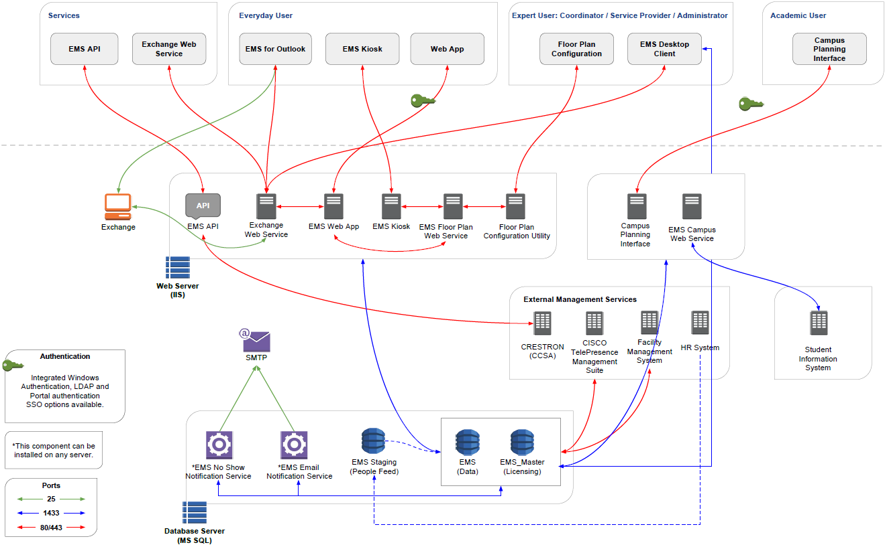

Introduction to (V44.1)
This section covers the installation and maintenance of . is used by System Administration, IT, and some expert users to maintain software settings, and to manage space and resources.
Tip: If you are new to , get started byLearning About Managing EMS.Concept: The Installation, Configuration, and User Guides for the apply to all of the following editions:
EMS Enterprise
EMS Professional
EMS Campus Planning Interface
These editions are controlled and based on the , however, their capabilities and features vary and are noted throughout the documentation.
This topic will provide the following information:
- What Is the [%=General.EMS Desktop Client%]?
- Understanding User Types
- EMS System Architecture
- Upgrading?
- Product Registration
- Contact Customer Support
What Is the ?
The EMS Desktop Client is the "core" administration system for all EMS Everyday User applications. This desktop application is used by Administrators to automate workflows and communications for maximum scheduling efficiency. enables Everyday Users to request space and services, see available space, check their calendar, check into meetings, change event details, end and cancel events, resolve booking conflicts, delegate space management to other users, send invitations, invoices, and notifications, approve requests, track resource usage, and track space utilization.
The is installed on Administrators' desktops and allows them to configure various workflows, as well as manage day-to-day operations within the application.
Understanding User Types
There are two different user types in :
- Administrators: These expert users create and maintain the EMS application within your organization, and manage or approve usage of space. Administrators include conference center managers, event coordinators, registrars, facility and real estate managers, and service providers. They can use this tool to set up and control the booking process and booking templates, define space (buildings, rooms, floors, areas, and regions), define services, manage security and user permissions, grant access, initiate notifications and reports, and integrate with other applications, servers, databases, and systems. Administrators may also include Service Providers (Catering, Audio Visual, IT Support Staff), Security, and Receptionist Staff. These users will primarily use the EMS Desktop Client.
- Everyday Users: This is a majority of the users in the organization. Everyday Users, such as an employee who needs to book a conference room or a consultant who needs to book a hoteling space for the day, can use it to make reservations and book meetings. Everyday Users are typically requesting rooms and services. These users do not use the , they will primarily use the web based application, EMS Web App in V44.1 (referred to as VEMS if using V44).
EMS System Architecture
The EMS Desktop Client is the foundation for a broad range of components, services, web applications, APIs, add-ons, and integrations.

Upgrading?
If you are upgrading to a newer version of EMS, please encourage users at your facility to read the release notes before they begin working with the new version of the software. Doing so will minimize the amount of time it takes them to get “up-to-speed” with the new release and help them benefit from new features and functions that they might not otherwise discover.
IMPORTANT: All the EMS-related components you have licensed must be upgraded with this release.
Product Registration
Primary Contacts can obtain the license file from the Support Center area on www.emssoftware.com. This license file is required to activate your EMS software and is required for new and existing customers.
- Configuration
- System Administration
- EMS Campus specific functionality or the Academic Import Utility
**Please note that some discrepancies (e.g., differences in behavior and/or exclusions) will exist.